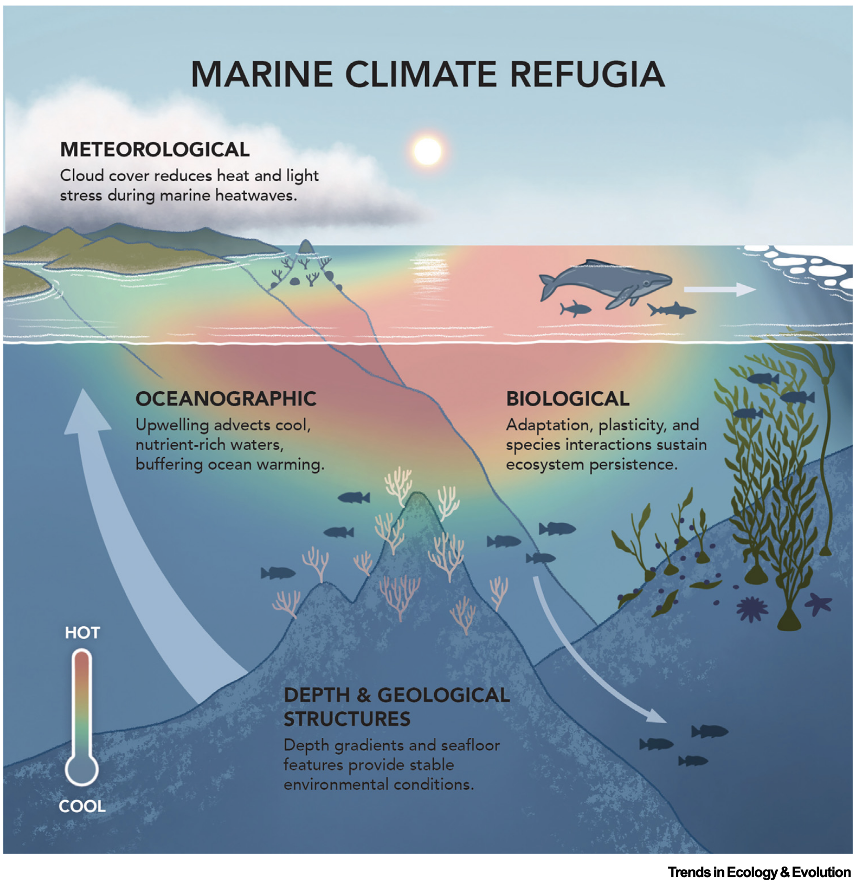
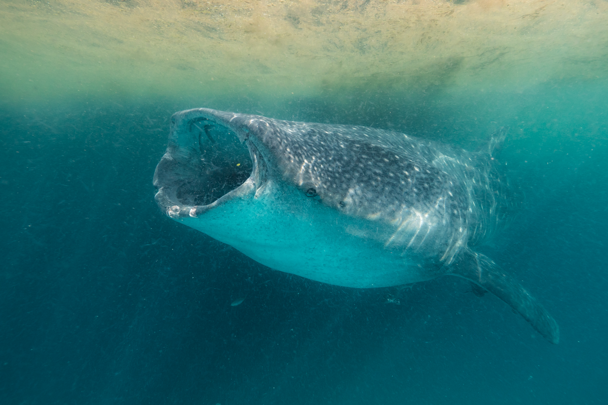
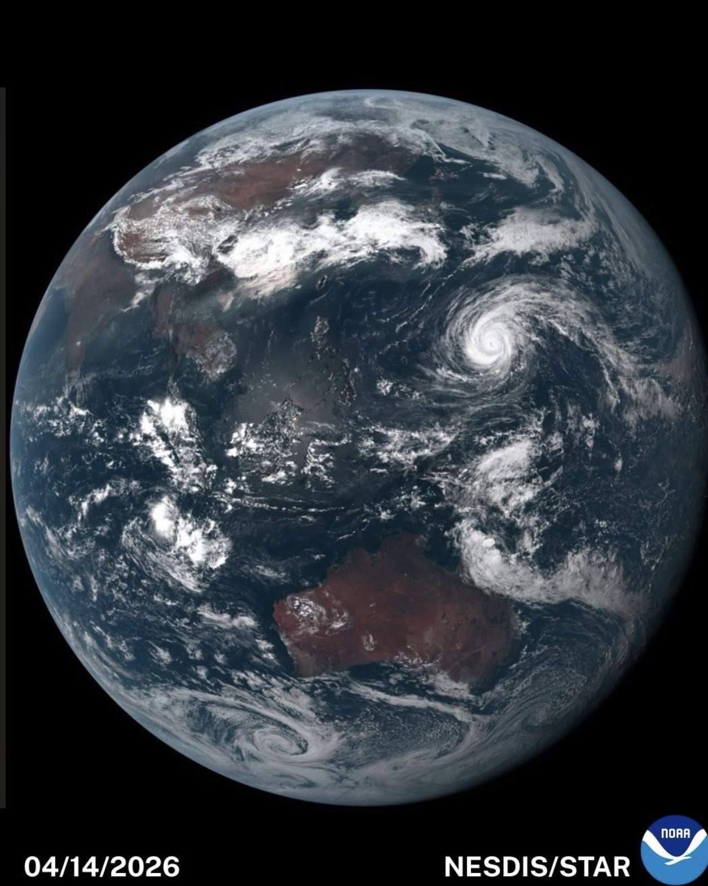

Marine ecologist and conservation scientist working across climate change, ocean biodiversity, and reproducible data science.
Dr Isaac Brito-Morales
I study how climate change reshapes biodiversity in the ocean, and I build reproducible analyses that help conservation decisions travel from data to action.
What I Work On
I am a marine ecologist and conservation scientist focused on species redistribution, marine climate exposure, conservation planning, and open, reproducible workflows in R.
My work connects global environmental datasets, ecological theory, and practical conservation needs, with a particular interest in how ocean dynamics shape biodiversity patterns and climate adaptation.
Climate change
Species redistributions, exposure, velocity, and ecological risk.
Marine conservation
Decision-support science for biodiversity, planning, and adaptation.
Reproducible R
Transparent workflows, reusable code, and teaching-friendly analysis.
Featured Highlights
New Paper on Marine Climate Refugia

Figure: Trends in Ecology & Evolution
As the world works toward protecting 30% of the ocean by 2030, a central question remains: which places will still support biodiversity as climate change accelerates? Our new paper in Trends in Ecology & Evolution reviews how marine climate refugia can help guide more climate-smart ocean conservation.
Current Projects

Photo: Chris Rohner
Save the Blue 5: Building 3D species distribution models and climate-data workflows to assess how climate change may reshape migratory marine megafauna habitat across the Southeast Pacific.
Notes and Blog

Image: NOAA NESDIS/STAR
Ocean Climate Downscaling: read a blog I made about building a workflow to transform coarse-resolution future ocean projections into high-resolution 3D marine data layers for species distribution models, climate exposure analyses, and conservation planning.
Current Snapshot
Senior Associate Scientist, Conservation International
Leading applied research on marine biodiversity, ocean fronts, climate change, and conservation planning.
Research Associate, UC Santa Barbara Marine Science Institute
Collaborating on marine science, conservation, and global environmental data analysis.
PhD, The University of Queensland
Biological sciences, climate change, and conservation.